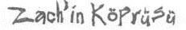

57. BÖLÜM
Mal’akh limuzinini güneye doğru, Kalorama Heights’a sürdü. Katherine’in laboratuvarındaki patlama tahmin ettiğinden büyük olmuştu, bu yüzden yaralanmadan kurtulduğu için şanslıydı. Ama çıkan kargaşa sayesinde herhangi bir dirençle karşılaşmadan paçayı sıyırıp, telefona bağırmakla meşgul olan bir bekçinin yanındaki kapıdan limuzinini hızla çıkarmıştı.
Yoldan çıkmalıyım, diye düşündü. Katherine henüz polise telefon açmamışsa bile patlamanın dikkatlerini çekeceği kesindi. Ayrıca limuzin kullanan gömleksiz bir adamı fark etmemek imkânsız.
Mal’akh yıllarca süren hazırlıktan sonra, o akşamın geldiğine inanmakta güçlük çekiyordu. Bu ana kadar uzun ve zorlu bir yolculuk yaşamıştı. Yıllar önce ıstırapla başlayan şey... bu akşam zaferle sonlanacak.
Her şeyin başladığı o akşam ismi Mal’akh değildi. Doğrusu, her şeyin başladığı akşam, bir ismi bile yoktu. Mahkûm 37. İstanbul’daki Kartal Soğanlık Cezaevi’ndeki çoğu tutuklu gibi, Mahkûm 37, uyuşturucu yüzünden buradaydı.
Beton bir hücredeki ranzada, aç ve üşümüş bir halde, daha ne kadar hapis yatacağını düşünerek karanlıkta yatıyordu. Sadece yirmi dört saat önce tanıştığı hücre arkadaşı, üstündeki ranzada yatıyordu. Obez bir alkolik olan ve işinden nefret eden hapishane müdürü hırsını mahkûmlardan çıkarıyordu. Az önce hapishanenin tüm ışıklarını söndürmüştü.
Mahkûm 37, havalandırmadan gelen konuşma seslerini duyduğunda saat neredeyse ondu. İlk duyduğu ses, şüpheye yer bırakmayacak kadar belirgindi. Bu gece geç vakitte gelen bir ziyaretçi tarafından uyandırılmaktan hoşlanmadığı açıkça belli olan hapishane müdürünün kavgacı sesiydi.
“Evet evet, uzun bir yoldan geldiniz,” diyordu. “Ama ilk ay ziyaretçi kabul edilmiyor. Devlet yönetmeliği. Ayrıcalık yok,”
Cevap veren yumuşak ve kibar ses keder doluydu. “Oğlum güvende mi?”
“O bir uyuşturucu bağımlısı.”
“Ona iyi davranılıyor mu?”
Müdür, “Yeterince iyi davranılıyor,” demişti. “Burası otel değil.”
Acı dolu bir duraksama olmuştu. “ABD Dışişleri Bakanlığı’nın suçlunun iadesini isteyeceğini biliyorsunuzdur.”
“Evet, hep isterler. Gereken yapılacak ama evrak işleri birkaç hafta sürebilir... veya belki bir ay... duruma bağlı olarak.”
“Neye bağlı olarak?”
Hapishane müdürü, “Şey,” demişti. “Yeterli personelimiz yok.” Durmuştu. “Elbette bazen sizin gibi kaygılı kişiler, hapishane personelinin işlemleri hızlandırmasını sağlayan bağışlar yaparlar.”
Ziyaretçi cevap vermemişti.
Müdür sesini alçaltarak, “Bay Solomon,” diye devam etmişti. “Sizin gibi para sorunu olmayan biri için her zaman seçenekler vardır. Hükümette tanıdıklarım var. Birlikte çalışırsak, oğlunuzu buradan yarın, hakkındaki tüm suçlamalar düşmüş olarak çıkarabiliriz. Ülkesine döndüğünde yargılanmaz bile.”
Ziyaretçinin cevabı hiç gecikmemişti. “Yaptığınız teklifin doğuracağı yasal sonuçlar bir yana, oğluma paranın bütün sorunları çözeceğini veya insanın hayatta sorumlulukları olmadığını öğretmeyi reddediyorum, özellikle de böylesi önemli bir konuda.”
“Onu burada bırakmayı mı tercih ediyorsunuz?”
“Onunla konuşmak istiyorum. Şimdi.”
“Söylediğim gibi kurallarımız var. Oğlunuzu göremezsiniz... tabii eğer hemen serbest bırakılması için pazarlık yapmazsanız.”
Birkaç saniye aralarında soğuk bir sessizlik olmuştu. “Dışişleri Bakanlığı sizinle temasa geçecek. Zachary’nin güvenliğini sağlayın. Bir haftaya kadar eve dönen bir uçakta olacağını tahmin ediyorum. İyi akşamlar.” Kapı çarpmıştı.
Mahkûm 37 kulaklarına inanamıyordu. Nasıl bir baba, ders olsun diye oğlunu böyle bir cehennemde bırakır? Peter Solomon, Zachary’nin suçlamasının kaldırılmasını bile reddetmişti.
O gece ilerleyen saatlerde Mahkûm 37, ranzasında yatarken nasıl kurtulacağını bulmuştu. Bir mahkûmu özgürlükten alıkoyan tek şey paraysa, o halde Mahkûm 37 özgür kalmış demekti. Peter Solomon parasından ayrılmak istemiyor olabilirdi ama magazin sayfalarını okuyan herkes, oğlu Zachary’nin de çok parası olduğunu bilirdi. Ertesi gün Mahkûm 37, müdürle özel olarak görüşmüş ve ona bir teklifte bulunmuştu; her ikisine de istediklerini sunacak cesur ve dâhice bir plan.
Mahkûm 37, “Bunun işe yaraması için Zachary Solomon’ın ölmesi gerek,” diye açıklamıştı. “Ama her ikimiz de hemen ortadan kaybolmalıyız. Yunan adalarında emekliliğini kutlarsın. Bu yeri bir daha asla görmezsin.”
Konuyu biraz tartıştıktan sonra iki adam el sıkışmıştı.
Ne kadar kolay olacağını hayal ederken gülümseyen Mahkum 37, yakında Zachaıy Solomon ölmüş olacak, diye düşünmüştü.
İki gün sonra Dışişleri Bakanlığı, Solomon ailesini korkunç haberi vermek için aramıştı. Hapishanede çekilen fotoğraflar, sopayla dövülerek vahşice öldürülen oğullarının kendi hücresinde yerde kıvrılmış cansız bedenim gösteriyordu. Başına çelik çubukla vurulmuş, vücudunun geri kalan kemikleri ise akıl almayacak sert darbelerle kırılmıştı. İşkence yapıldıktan sonra öldürülmüş gibi görünüyordu. Baş şüpheli, maktulün parasıyla birlikte ortadan kaybolduğu sanılan hapishane müdürüydü. Zachary büyük servetini özel bir hesaba aktardığını bildiren kâğıtlar imzalamış, o hesap ise cinayetin hemen ardından boşaltılmıştı. Paranın şu anda nerede olduğu bilinmiyordu.
Peter Solomon özel uçağıyla Türkiye’ye uçmuş ve dönerken beraberinde getirdiği oğlunun tabutunu Solomon aile mezarlığına defnetmişlerdi. Hapishane müdürü hiç bulunamamıştı. Mahkûm 37, asla bulunamayacağını çok iyi biliyordu. Adamın şişman cesedi, Marmara Denizi’nin dibinde yatarken, göç için İstanbul Boğazı’ndan geçen mavi yengeçleri besliyordu. Zachary Solomon’a ait servet, numarası takip edilemeyen bir hesaba aktarılmıştı. Mahkûm 37 yeniden özgür bir adamdı... büyük servet sahibi, özgür bir adam.
Yunan adaları cennet gibiydi. Güneş. Deniz. Kadınlar.
Paranın satın alamayacağı hiçbir şey yoktu; yeni kimlikler, yeni pasaportlar, yeni umutlar. Kendine bir Yunan adı seçti: Andros Dareios. Andros “savaşçı” demekti, Dareios ise “zengin”. Hapishanedeki korku dolu karanlık gecelerden soma Andros geri dönmemeye yemin etti. Kabarık saçlarını tıraş etti ve uyuşturucu dünyasından tamamıyla çekildi. Daha önce hayal bile etmediği fiziksel zevkleri keşfederek, yepyeni bir hayata başlamıştı. Ege Denizi’nin çivit mavi sularına yelken açmak onun için yeni eroin transıydı; ızgaradan aldığı sulu arni souvlakia’yı{53} çiğnemek yeni ekstasisiydi: kayaların tepesinden Mikanos’un köpüklü sularına yaptığı uçurum atlayışı yeni kokainiydi.
Yeniden doğdum.
Andros, Siros Adası’nda büyük bir villa satın almış ve seçkin Possidonia kasabasındaki güzel insanlarla birlikte yaşamaya başlamıştı. Bu Yenidünya, zenginlikle birlikte kültürü ve fiziksel kusursuzluğu da içinde barındıran bir topluluktan oluşuyordu. Komşuları vücutları ve zihinieriyle gurur duyuyorlardı ve bu his bulaşıcıydı. Yeni taşman Andros kumsalda koşu yapmaya, soluk tenini bronzlaştırmaya ve kitap okumaya başlamıştı. Homeros’un Odysseie’sini okurken, bu adalarda savaşan güçlü bronz erkeklerin hayallerine kendini kaptırmıştı. Ertesi gün ağırlık çalışmaya başlamış ve göğsüyle, kollarının ne denli çabuk geliştiğine inanamamıştı. Sonunda kadınların kendisine baktığını fark etmeye başlamıştı ve bu hayranlık sarhoş ediciydi. Ama daha da güçlenmek istiyordu. Öyle de yaptı. Karaborsada satılan büyüme hormonlarıyla karıştırılmış steroitlerin desteği ve saatlerce ağırlık kaldırmanın yardımıyla Andros, kendini hiç hayal etmediği bir şeye dönüştürmüştü; mükemmel bir erkek modele. Hem boyunu, hem de kas yapısını artırmış, kusursuz bir göğüsle, sürekli bronz görünen adaleli bacaklara sahip olmuştu.
Artık herkes ona bakıyordu.
Daha önceden de uyarıldığı gibi, bu ağır steroitler ve hormonlar vücudunu değiştirmekle kalmamış, sesini de etkileyerek, kendisini daha da gizemli hissetmesini sağlayan ürkütücü bir fısıltıya dönüştürmüştü. Bu yumuşak ve esrarengiz ses; yeni vücudu, serveti ve gizemli geçmişiyle birleşince, onunla tanışan kadınları mıknatıs gibi çekmeye başlamıştı. Kadınlar kendi istekleriyle ona geliyor, o ise hepsini birden tatmin ediyordu. Fotoğraf çekimi için adaya gelen mankenlerden, tatile çıkmış Amerikalı seksi üniversite öğrencilerine, komşuların yalnız eşlerinden genç erkeklere kadar herkesi çekiyordu.
Ben bir şaheserim.
Ama geçen yıllarla birlikte Andros’un cinsel maceraları heyecanını yitirmeye başlamıştı. Her şey gibi. Adanın zengin mutfağı lezzetini kaybetmiş, okuduğu kitaplara karşı ilgisizleşmiş, hatta villasından görülen güneşin batışı bile sıkıcı gelmeye başlamıştı. Bu nasıl olurdu? Henüz yirmili yaşlarının ortalarında olmasına rağmen, kendini çok yaşlı hissediyordu. Hayatta yaşayacak başka ne kaldı? Vücudunu bir sanat eserine dönüştürmüş, kendini eğitmiş, zihnini kültürle geliştirmiş, evini cennete çevirmiş ve istediği herkesin aşkını kazanmıştı.
Ama inanılmaz bir şekilde, kendini Türkiye’deki o hapishanede olduğu kadar yalnız hissediyordu.
Neyin eksikliği bu?
Cevabını aylar sonra buldu. Andros villasında tek başına oturmuş, gecenin bir yarısı televizyon kanallarını zaplarken, farmasonluğun sırlarıyla ilgili bir programa rastladı. Cevaplardan çok, sorular üreten program kötü hazırlanmıştı ama yine de kardeşlikle ilgili komplo teorilerinin bolluğu ilgisini çekti. Programın sunucusu efsane üstüne efsane anlatıyordu.
Farmasonlar ve Yenidünya Düzeni...
Masonik Birleşik Devletler Devlet Mührü...
P2 Mason Locası...
Farmasonluğun Kayıp Sırrı...
Mason Piramidi...
Andros şaşkınlıkla yerinde doğruldu. Piramit. Sunucu, üzerindeki şifreli yazıyla kayıp bilgeliğin ve akıl almaz bir gücün kapılarını açan, gizemli bir taş piramidin hikâyesinden bahsetmeye başlamıştı. Hikâye inanılmaz olsa da, onun bir anısını canlandırmıştı... çok daha karanlık bir zamandan kalma zayıf bir hatıra. Andros, Zachary Solomon’ın babasından gizemli bir piramitle ilgili duyduklarını hatırlıyordu.
Olabilir mi? Andros ayrıntıları hatırlamak için kendini zorladı.
Program bittiğinde balkona çıkıp, serin havayla zihnini temizledi. Her şeyi hatırlamaya başlayınca, bu efsanenin doğruluk payı olabileceğini fark etti. Ve eğer tüm bunlar gerçekse, öleli çok olduğu halde Zachary Solomon’ın vereceği bir şeyler hâlâ var demekti.
Kaybedecek neyim var?
Üç hafta sonra, mükemmel bir zamanlamayla Andros, Solomon’ların Potomac’taki malikânelerinin serasının dışında soğukta duruyordu. Camın ardından, Peter Solomon’ın kız kardeşi Katherine ile konuşup gülüştüğünü görebiliyordu. Zachary’yi unutmakta hiç güçlük çekmemişler, diye düşündü.
Kar maskesini yüzüne geçirmeden önce, uzun yıllardır ilk defa burnuna kokain çekti. O tanıdık cesaretin damarlarına hücum ettiğini hissetti. Silahını çıkarıp, kapıyı eski bir anahtarla açtı ve içeriye adımını attı. “Selam Solomon’lar.”
Ne yazık ki, akşam Andros’un planladığı gibi gitmedi. Almaya geldiği piramidi ele geçiremediği gibi, saçmayla vurulmuş ve karla kaplı çimlerin üstünden sık ağaçlıklara doğru koşmaya başlamıştı. Peter Solomon elinde parıldayan tabancasıyla onu kovalıyordu. Andros ağaçlıkların arasına dalıp, derin bir kaya geçidinin arasından aşağı inmeye başladı. Dondurucu kış havasında, çok aşağılardan gelen bir çağlayanın sesi yankılanıyordu. Meşe ağacından yapılmış bir bankın yanından geçip, sola döndü. Saniyeler sonra, buzlu patikanın üstünde kayarak durdu ve ölümün eşiğinden döndü.
Aman Tanrım!
Bir metre kadar ilerisinde patika sona eriyordu. Gerisi ise buzlu nehre bakan bir boşluktu. Patikanın yanındaki büyük kaya parçası, bir çocuğun beceriksiz elyazısıyla kazınmıştı:

Kaya geçidinin diğer tarafında patika devam ediyordu. Peki köprü nerede?! Kokain artık işe yaramıyordu. Kapana kısıldım. Paniğe kapılan Andros patikadan yukarı kaçmak için arkasını döndü ama karşısında, elinde silahıyla, nefes nefese Peter Solomon duruyordu.
Andros silaha bakıp, geriye doğru bir adım attı. Arkasındaki buzla kaplı nehre bakan uçurum, en az on beş metre yükseklikteydi. Çağlayandan yükselip etraflarını saran buğu, onu kemiklerine kadar donduruyordu.
Solomon, “Zach’in köprüsü uzun zaman önce çürüdü,” dedi. “Bu kadar aşağıya yalnızca o inerdi.” Solomon silahını tehditkâr bir biçimde sabit tutuyordu. “Oğlumu neden öldürdün?”
Andros, “O bir hiçti,” diye yanıtladı. “Bir uyuşturucu bağımlısıydı. Ona iyilik yaptım.”
Solomon, Andros’un göğsüne nişan aldığı silahıyla yaklaştı. “Belki aynı iyiliği ben de sana yapmalıyım.” Ses tonu şaşırtıcı biçimde korkutucuydu. “Sen oğlumu döverek öldürdün. Bir insan böyle bir şeyi nasıl yapar?”
“İnsan felaketin eşiğine geldiğinde akıl almaz şeyler yapar.”
“Oğlumu öldürdün!"
Andros hararetle, “Hayır,” dedi. “Oğlunu sen öldürdün. Nasıl bir baba, oğlunu çıkarma şansı varken onu hapishanede bırakır? Oğlunu sen öldürdün! Ben değil.”
“Hiçbir şey bilmiyorsun!” diye bağıran Solomon’ın sesi acı doluydu.
Andros, yanılıyorsun, diye düşündü. Her şeyi biliyorum.
Peter Solomon silahını doğrultarak iyice yaklaştığında artık aralarında beş metreden az kalmıştı. Andros’un göğsü yanıyor, çok kan kaybettiğini hissediyordu. Sıcaklık aşağıya akıp, karnına inmişti. Omzunun üstünden arkadaki uçuruma baktı. İmkânsızdı. Solomon’a döndü. “Hakkında, sandığından daha fazla şey biliyorum,” diye fısıldadı. “Soğukkanlılıkla cinayet işleyemeyecek bir adam olduğunu biliyorum.”
Tam hedefi nişan alan Solomon daha da yaklaştı.
Anderson, “Seni uyarıyorum, eğer o tetiği çekersen, sonsuza kadar yakanı bırakmam,” dedi.
Zaten bırakmamalısın! Ve bunun ardından Solomon ateş etti.
Siyah limuzinini hızla Kalorama Heights’a sürerken, şimdi kendine Mal’akh diyen kişi, buzlu kayalıklarda onu ölümün eşiğinden döndüren mucizevi olayları düşündü. Sonsuza kadar değişmişti. Silah sesi bir anlığına yankılama da etkileri on yıllar sürmüştü. Bir zamanlar bronz ve mükemmel olan vücudunda artık o akşamdan kalma yara izleri vardı... Bu yaraları yeni kimliğinin dövmeli sembolleri altında saklıyordu.
Ben Mal’akh’ım.
Bu en başından beri benim kaderimdi.
Ateşte yürümüş, küle dönmüş ve sonra yeniden doğmuştu... bir kez daha değişimden geçmişti. Bu gece, uzun ve muhteşem yolculuğunun son adımı olacaktı.